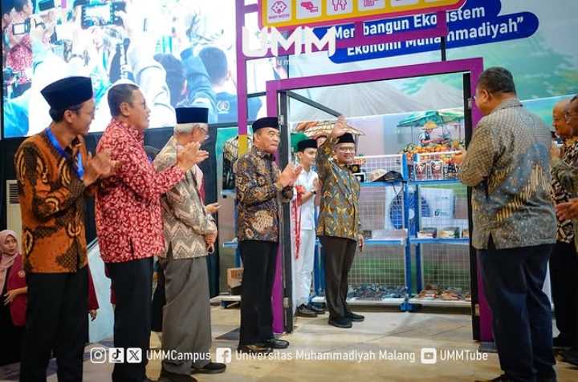
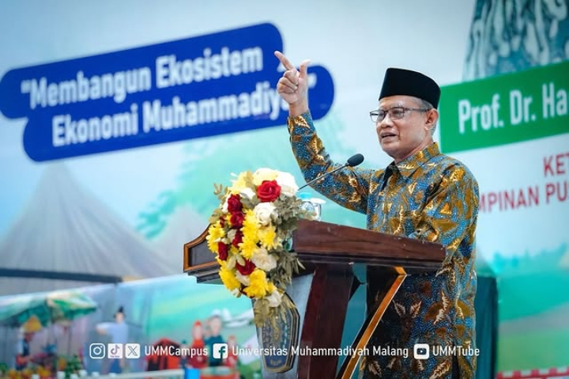
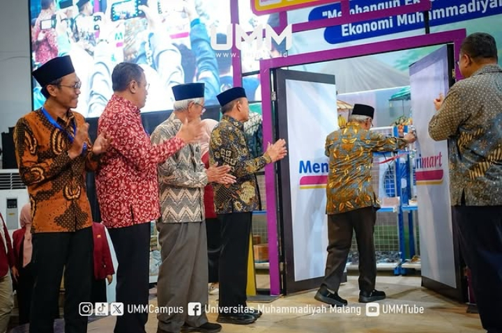

Peluncuran Bisnis Retail Syariah 'MentariMart' oleh Muhammadiyah
Peluncuran Bisnis Retail Syariah 'MentariMart' guna Ekosistem Ekonomi Muhammadiyah

Pada hari Rabu (26/2/2025) kemarin, PP Muhammadiyah meluncurkan bisnis retail MentariMart yang di kelola dengan prinsip ekonomi syariah. Peluncuran tersebut dilakukan secara simbolis oleh Ketua Umum PP Muhammadiyah (Haedar Nashir) yang didampingi oleh Ketua PP Muhammadiyah bidang Ekonomi (Muhajir Effendy), Ketua Majelis Ekonomi Bisnis dan Pariwisata PP Muhammadiyah (Arif Budimanta), Kepala Departemen Ekonomi dan Keuangan Syariah Bank Indonesia (Imam Hartono) serta Perwakilan Alfamart dalam acara Rakornas Ekonomi Muhammadiyah yang di gelar di Universitas Muhammadiyah Malang (UMM).

'Jika kita ingin maju di bidang ekonomi, maka kita harus melangkah progresif. Satu, perubahan cara pandang atau perspektif. Karena kita ini gerakan Islam dan Islam adalah landasan bahkan keseluruhan dari nilai yang melekat dengan Muhammadiyah, maka kita harus memperdalam, memperluas, mempertajam dan memproyeksikan paham Islam tentang kehidupan yang harus positif, konstruktif, produktif dan progresif' Ucap Prof. Dr. Haedar Nashir, M.Si selaku Ketua Umum PP Muhammadiyah dalam Keynote Speech-nya.
Dalam kiprah bidang ekonomi PP Muhammadiyah disebutkan bahwa, di berbagai wilayah Nusantara Muhammadiyah telah senantiasa bergerak untuk umat. Sederet bisnis sudah terlahir dan sukses berjalan dengan apik, salah satunya yang bergerak di bidang pangan.
Muhammadiyah memang telah lama berhasil menyediakan beragam bahan pokok dan kebutuhan melalui toko ritel yang didirikan di berbagai kota dan kabupaten di seluruh Indonesia. Bahkan kini, Muhammadiyah telah meluncurkan bisnis mega ritel yang bernama MentariMart. Ini tentu akan menjadi kekuatan baru Muhammadiyah di sektor pertumbuhan ekonomi yang berkemajuan.

Menyediakan kebutuhan pokok masyarakat dengan memberdayakan umat. Bisnis mega ritel ini juga menjadi cara strategis Muhammadiyah untuk membangun ekosistem ekonomi Muhammadiyah. Memperkuat beragam bisnis yang ada, menciptakan masyarakat yang sebenar-benarnya dan mewujudkan kesejahteraan bagi semesta. Sederet bisnis itu hanya sebagian kecil dari ribuan hasil upaya bidang ekonomi bisnis dan pariwisata Muhammadiyah. Dengan sederet program yang dimiliki, Muhammadiyah menggerakkan dan menjalankan strategi agar bisa menjalankan negeri, melahirkan bisnis baru, mensejahterakan secara menyeluruh, dan mencetak entrepreneur tanpa ragu. Muhammadiyah selalu menjadi yang terdepan untuk mewujudkan manusia terbaik dan beriman, salah satunya melalui jalur ekonomi bisnis dan pariwisata. Membangun jiwa usaha, merawat kiprah yang ada untuk menebar manfaat bagi bangsa.
'Jadi itulah hebatnya Muhammadiyah, maka kita bersyukurlah ber-Muhammadiyah ini. Insyaallah ini adalah pilihan yang paling tepat kita beramal Ma'ruf nahi Munkar. Marilah kita bangun Muhammadiyah ini yang tadinya era depan yaitu membangun Social enterprise Muhammadiyah menjadi konglomerasi besar selama disini. Dan mari kita bekerja keras betul untuk merealisasikan program unggulan kita yaitu terutama retail ini' Ucap Prof. Dr. Muhadjir Effendy, M.A.P selaku Ketua PP Muhammadiyah.